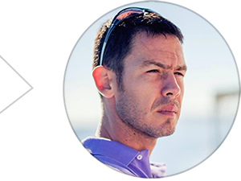
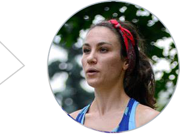
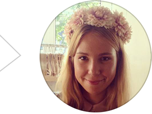
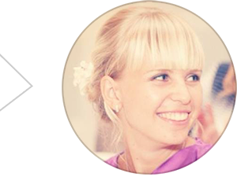

UNITY RUN CAMP … Тут будет текст про идею лагеря.
Тренировки
Тренировки очень разнообразны. Три группы, подробо программ с учётом индивидуальных особенностей, корректировка по прогрессу. Разбор техники по видео.
|
Тренировки в лагере — это главное. По результатам анкет участников мы формируем группы, но на каждой тренировке я уделяю внимание бегунам, облегчаю или усложняю задачи индивидуально. Я закончил спортивный университет в Белграде, 10 лет был профессиональным бегуном и соревновался на велотреке. После этого тренировал спортсменов. Самое важное для тренера — чувствовать бегунов, их пределы, текущее состояние, настроение. В лагере я уделяю этому много внимания. Ну и конечно, если у спортсмена возникает вопрос, рад придти на помощь. |

Милан Милетич, организатор лагеря профессиональный спортсмен и тренер |
Отдых
Спорт — спортом, но для гостей лагеря эти дни ещё как правило и долгожданный отпуск. Поэтому помимо изнурительных тренировок их ждёт насыщенная развлекательная программа.
|
Тренировки в лагере — это главное. По результатам анкет участников мы формируем группы, но на каждой тренировке я уделяю внимание бегунам, облегчаю или усложняю задачи индивидуально. Я закончил спортивный университет в Белграде, 10 лет был профессиональным бегуном и соревновался на велотреке. После этого тренировал спортсменов. Самое важное для тренера — чувствовать бегунов, их пределы, текущее состояние, настроение. В лагере я уделяю этому много внимания. Ну и конечно, если у спортсмена возникает вопрос, рад придти на помощь. |

Камилла Газиева, организатор лагеря бегунья и муза, готовится к первому ультрамарафону |

Впечатления участников
Осень 2013, Паг
Отчёт в блоге лагеряОтчёт и инфографика Тани Мисютиной
Весна 2013, Паг
Отчёт в блоге лагеря|
Решение поехать в спортивный лагерь пришло ко мне совершенно неожиданно. Я случайно увидела в Фейсбуке объявление о наборе группы и подумала: «Беговой лагерь – это же просто отличная идея!». Никакого бегового опыта у меня на тот момент не было, мне просто очень хотелось начать бегать. За 3 недели до поездки Камилла выслала мне план, по которому следовало готовиться к лагерю. Раньше мне никогда не приходилось тренироваться по программе, и эта идея меня чрезвычайно увлекла. К моему удивлению, план оказался вполне реальным - нужно было бегать по 5-8 км 3 раза в неделю (эти тренировки идеально совпадали с пробежками с клубом Moskva River Runners), а также бегать интервалы по понедельникам. Регулярные тренировки помогли мне справиться с волнением, которое я испытывала перед поездкой, а также немного поверить в себя и почувствовать начинающим бегуном ☺. Итак, когда я поехала в лагерь, у меня за плечами было чуть больше месяца регулярных тренировок и личный рекорд в виде очень медленных 8 км. Программа тренировок в лагере, признаюсь, меня сперва немного напугала, но отступать было некуда. Кроме того, я понимала, что в нашей группе кроме меня, есть еще несколько девушек начального уровня, а вместе всегда кто-то проще и веселее. Мы тренировались по два раза в день: утром и во второй половине дня. Программа тренировок была очень разнообразной: легкий бег, интервальные тренировки, беговые упражнения, упражнения на укрепление пресса, мышц спины и ног, плаванье, велосипед. Неожиданно для себя, я так втянулась в этот ритм, что каждая тренировка, каждая маленькая победа над собой доставляли необыкновенное удовольствие. Самой запоминающейся тренировкой была hill trainings (нужно было 4 раза вбежать на ооочень длинный холм). Тренировка была в предпоследний день – как раз перед длинным забегом, который должен был завершать программу лагеря. Честно признаться, когда я посмотрела на этот холм, услышала количество повторений – я просто не поверила, что смогу это сделать. Мне сразу отчетливо вспомнилось, как в один из первых дней я с огромным трудом одолела этот холм, а тут нужно было сделать это целых 4 раза. Я побежала, сделала одно повторение, второе, третье, четвертое, и вот я уже бегу обратно – по направлению к нашему дому, улыбаясь самой широкой улыбкой на которую только способна. Я не скажу, что это было просто, но это и не было настолько сложно, как казалось сначала. В какой-то момент я просто перестала бояться и так отчаянно себя жалеть. Ведь правду говорят – многие вещи кажутся невыполнимыми до тех пор, пока их не сделаешь. Надо ли говорить, что на следующее утро, перед финальной длинной пробежкой, я проснулась с абсолютно счастливой и уверенной в своих силах. В итоге я достаточно неплохо пробежала 16 км, что и по сей день является моим личным рекордом. Отдельно бы хотелось сказать про ту чудесную атмосферу, которая царила в лагере – мы все были одной большой спортивной семьей, поддерживали и радовались достижениям друг друга, а это очень важно, особенно когда ты выходишь за рамки своей зоны комфорта и начинаешь достигать новые, неведомые ранее цели. Милан – тренер лагеря, удивительный человек и профессионал, одно знакомство с которым уже очень ценно. От него мы узнали очень много про то, как нужно тренироваться, как начать бегать быстрее и больше, про питание, технику бега и спортивную экипировку. Для меня этот опыт оказался очень ценным, лагерь помог мне переоценить многие вещи в своей жизни, понять, что спорт может сделать мою жизнь совершенно другой – более яркой, осмысленной и счастливой. Надо ли говорить, что я бегаю до сих пор и готовлюсь к своему первому полумарафону, который планирую пробежать 20 октября в Амстердаме. |

Надя Рыжова, |
|
Бегом я увлекалась в августе 2012 года. Бегала 1-2 раза в неделю и максимально пробегала 10 км за час. Зимой не бегала вообще, но когда увидела пост Камиллы о лагере в Хорватии, не сомневалась ни минуты: я поеду! Только потом появился страх и неуверенность: а вдруг я не смогу, буду плестись в конце и тянуть команду вниз. Ведь после такого большого перерыва и без подготовки соответствовать бегунам из клуба, казалось, будет непросто. Спокойствие пришло, когда Камилла выложила план тренировок, а еще больше уверенности появилось, когда я узнала, что будет 3 команды: новички (не буду писать слабые), средний уровень и сильные. Конечно, я попадала в команду новичков и была там не одна (а с каждым днем тренировок нас становилось все больше). Для нас был свой план тренировок, свой пэйс, расстояния и маршруты. Ребята из сильной команды нас всегда поддерживали, болели за нас и радовались нашим личным победам. Важно отметить, что все тренировки проходили под присмотром профессионального тренера и просто прекрасного человека, Милана) Подробно описывать жизнь в лагере не имеет смысла, так как туда нужно ехать и прожить эту маленькую жизнь самому. Во-первых, это шанс познакомиться с очень интересными и разносторонними людьми. Во-вторых, это просто круто узнать, что ты можешь тренироваться 7 дней подряд по 2 раза в день, а на 8-й день пробежать 18 км по жаре и холмам)) а еще, понять, что тебе мало 2-х тренировок в день и тебе хочется встать в 7 утра и пробежать 5 км просто так, под дождем и ветром (а кому и 30 км). Ну и конечно это незабываемый отдых, ведь помимо тренировок оставалось много времени для прогулок, купания, барбекью на пляже, совместных обедов и ужинов, а также лекций о правильном питании и тренировках. Так что если у вас есть сомнения ехать или не ехать- езжайте! Вы не пожалеете! P.S после лагеря мой личный результат за 10 км улучшился на 3 мин, а сейчас я поставила себе цель пробежать полумарафон в октябре 2013 и теперь я точно знаю, что смогу! |

Ксения Махортова, |